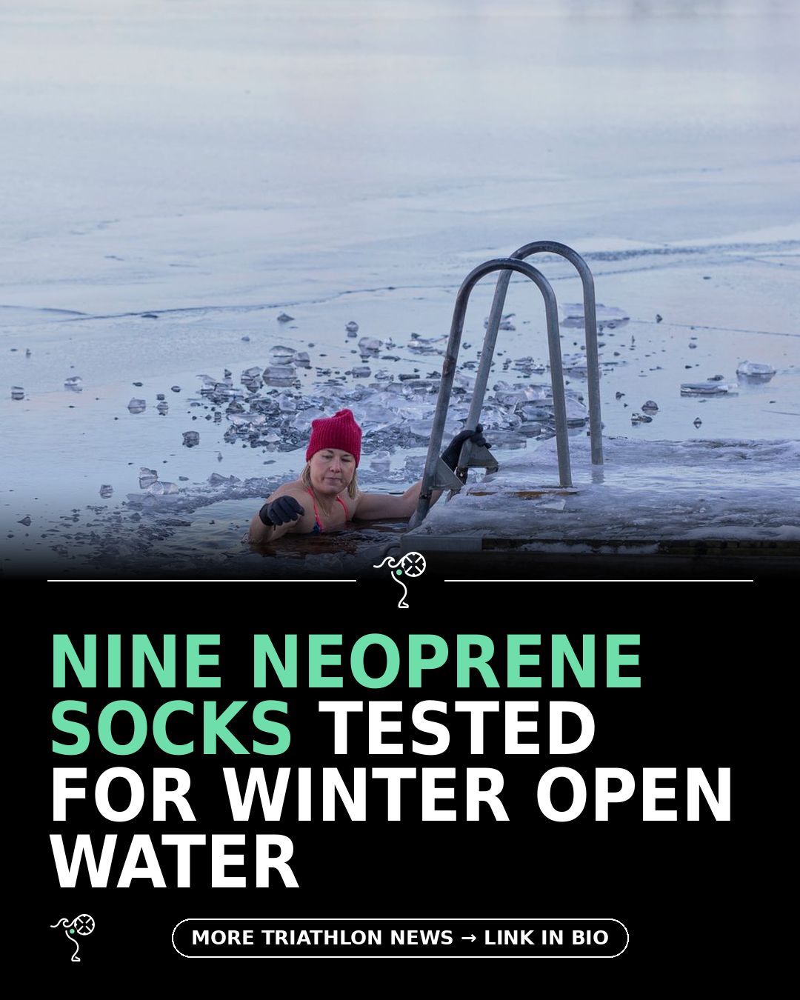

Triathlon News Daily
Tuesday, 15 September 2026 · generated automatically

Today's stories
- Nine neoprene socks tested for cold-water swimming in 2026220 Triathlon
- First look at the Xero Shoes Mesa Summit for womenBlog - A Triathlete's Diary
- Brown butter apple cider snickerdoodles for the off-season kitchenMarathons & Motivation